Nodeberget ist ein geräumiges Ferienhaus von ca. 220 m² — mit viel Platz zum Zusammensein und eigenen Räumen zum Zurückziehen.
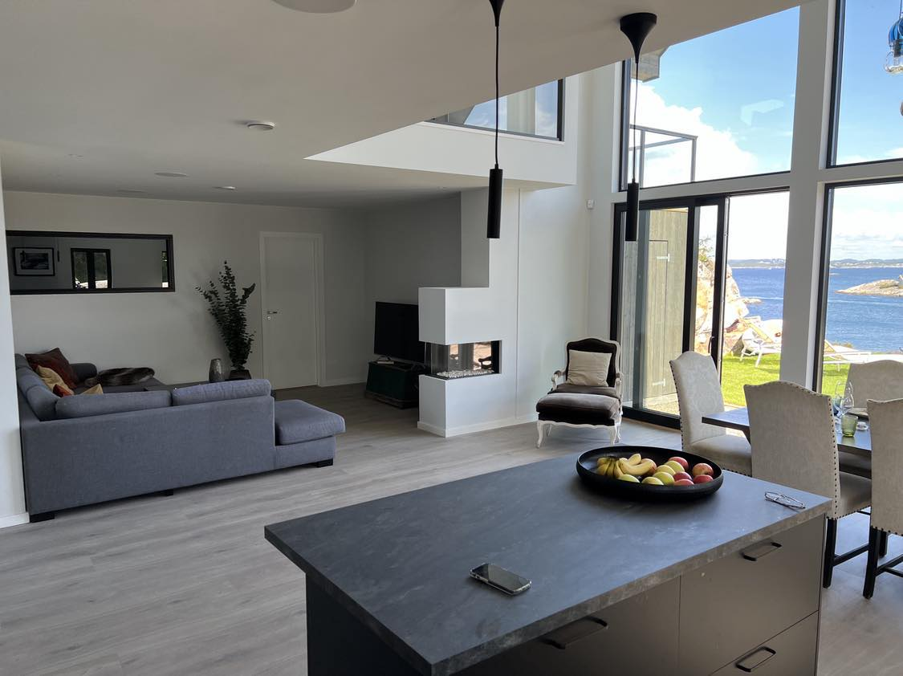
Das Ferienhaus befindet sich am Nodeberg in Skålvik auf der idyllischen Insel Flekkerøya etwas außerhalb von Kristiansand. Das moderne Gebäude, das 2023 erbaut wurde, befindet sich auf einem Hügel mit Panoramablick auf das Meer und Bootsverbindungen zum Stadtzentrum von Kristiansand. Es gibt eine Straße, die zur Hütte führt, 2 Parkplätze und einen Bootsanlegeplatz. Es ist nicht weit von Einkaufsmöglichkeiten und 20 Autominuten vom Stadtzentrum von Kristiansand entfernt.
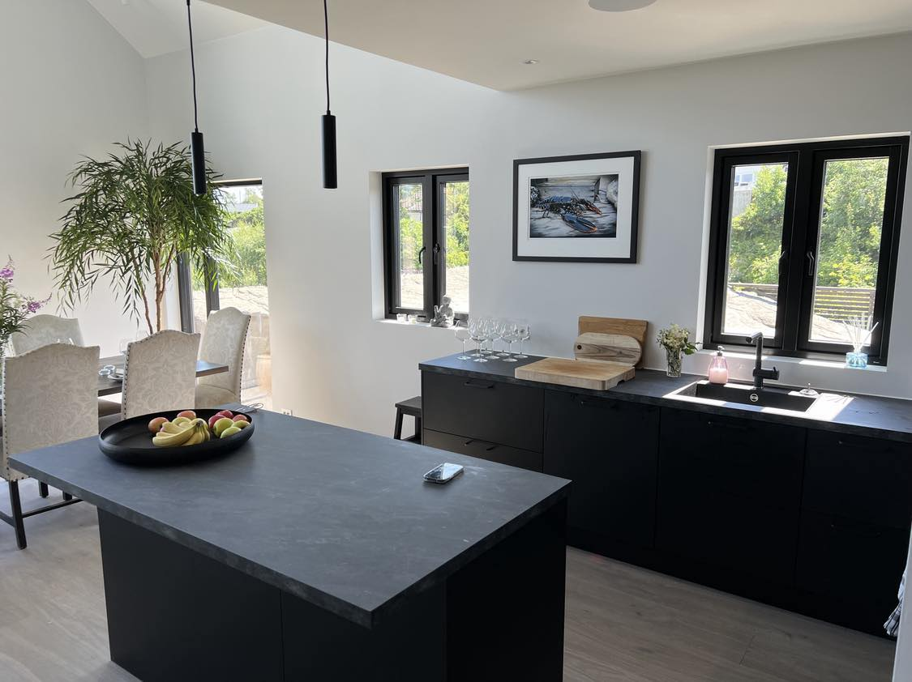
Erdgeschoss – Abstellräume:
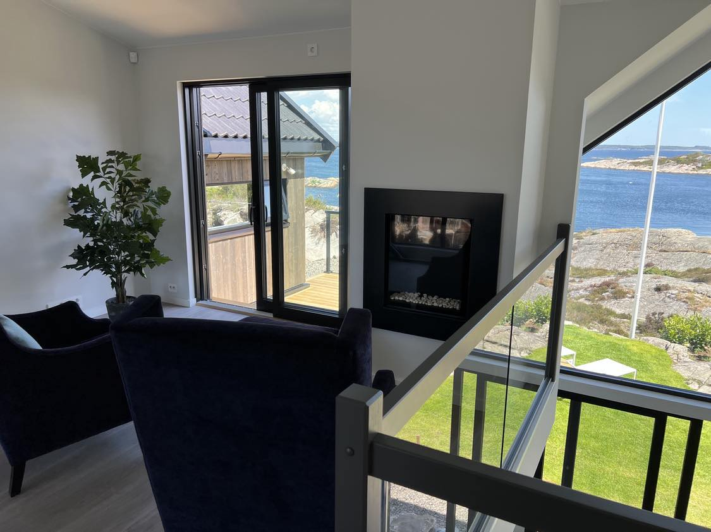
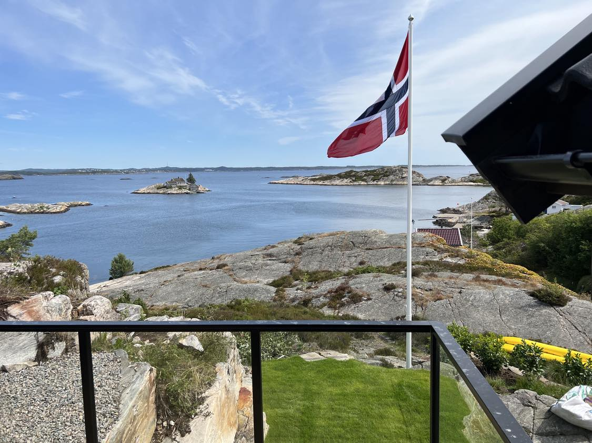
Der Abstellraum im Freien in Richtung Parkplatz dient zur Lagerung von Gaskamin zum Grillen im Freien und Stühlen / Kissen im Freien. Der Außenschuppen in Richtung Meer wird für Angelgeräte und Gartengeräte genutzt. Die Angelausrüstung kann auf Wunsch verwendet werden. Das Grundstück grenzt an einen schönen öffentlichen Badeort. Dieser kann gemeinsam mit anderen Bewohnern und Hüttengästen genutzt werden. Es gibt tolle Bademöglichkeiten mit tiefem Wasser direkt an den Felsen.
WICHTIG! Denken Sie daran, jede Nacht nach Gebrauch Matten, Kissen und Matratzen ins Haus zu räumen, um sie vor Regen und Wind zu schützen.
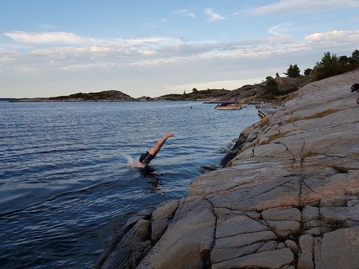
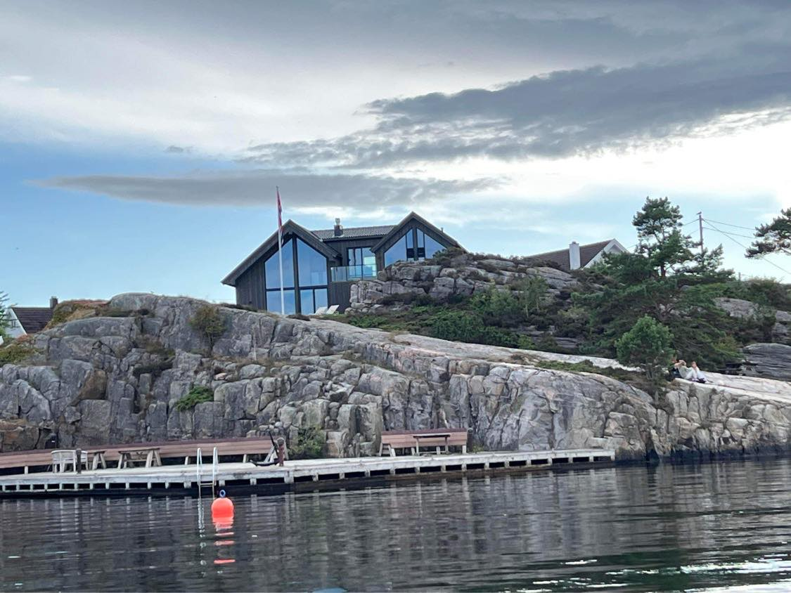
Es gibt einen tollen Badeplatz 20 Meter von der Hütte entfernt. Mit seinen schönen Felsen ist der Badebereich der perfekte Ort, um heiße Sommertage zu genießen und ein erfrischendes Bad zu nehmen.
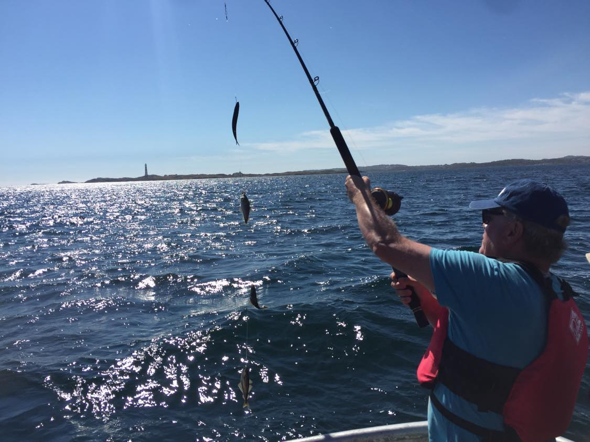
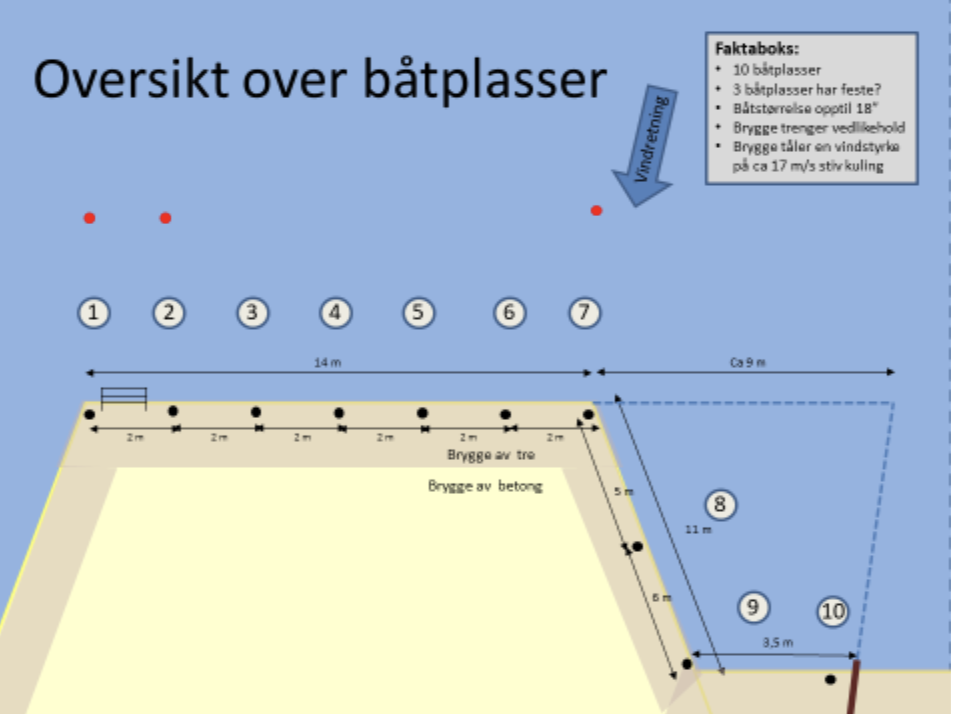
Versuchen Sie Ihr Glück beim Angeln! In der Umgebung von Flekkerøya gibt es viele Fische, vor allem ist es einfach, Makrelen, Kabeljau, Seelachs und Leier zu fangen. Es kann sowohl vom Land als auch vom Boot aus gefischt werden. Komplette Angelausrüstung finden Sie im Ferienhaus.
Das Ferienhaus verfügt über einen eigenen Liegeplatz, der genutzt werden kann. Bitte kontaktieren Sie uns, wenn dies gewünscht ist. Ein Boot ist nicht verfügbar. Bei Anmietung eines externen Bootes: Dieses muss weniger als 20 Fuß lang sein, damit es in den Liegeplatz passt. Die Zeichnung zeigt die verschiedenen Liegeplätze am Pier und das Ferienhaus verfügt über den Bootsplatz Nr. 1. Andere Boote und Kajaks dürfen nicht benutzt werden, da diese Eigentum anderer Hütten sind.
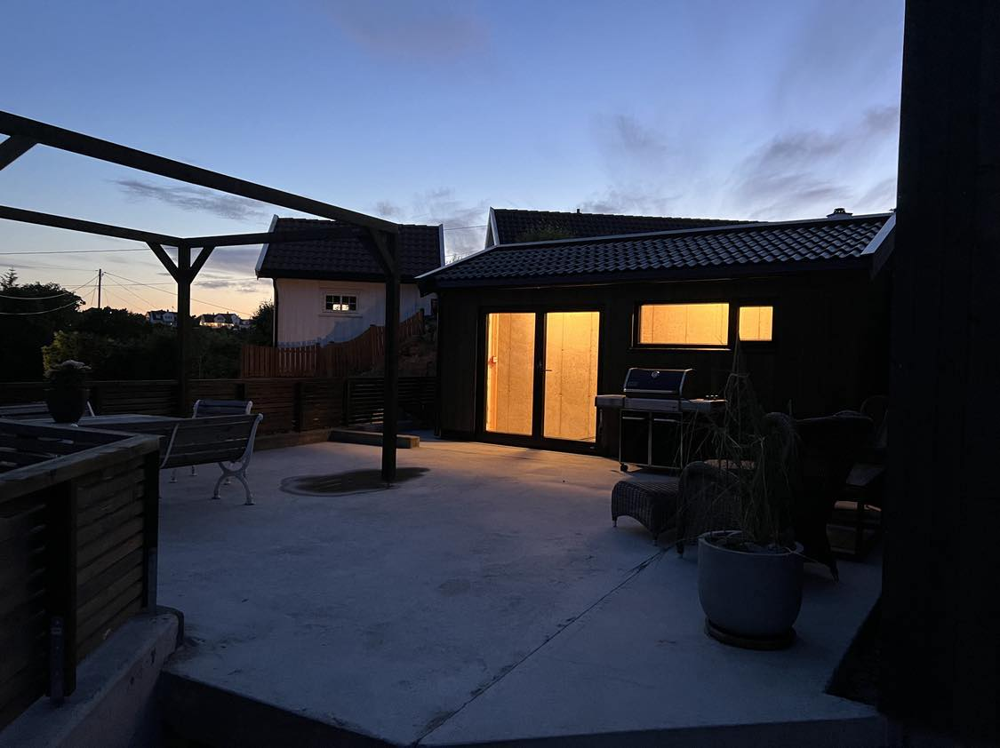
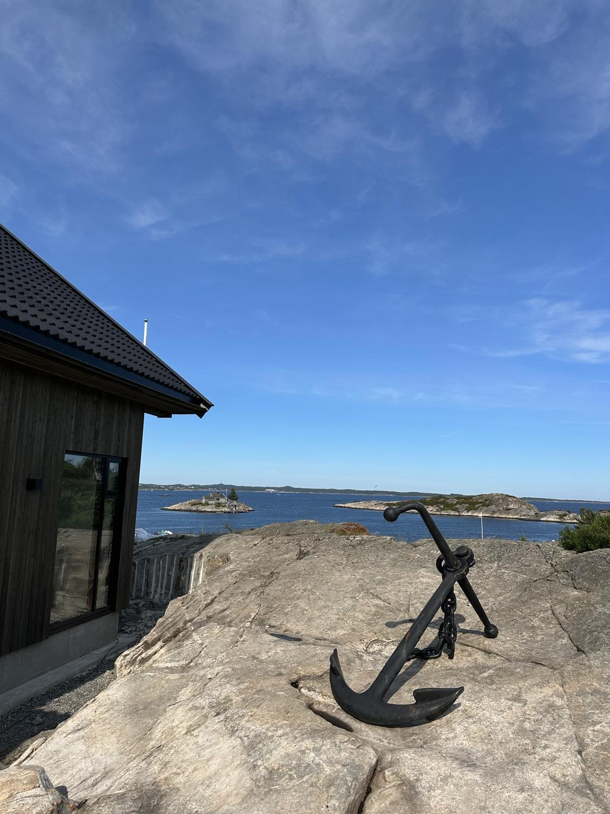
Rund um das Ferienhaus gibt es schöne Außenbereiche mit einem einzigartigen Blick auf das Meer. Es gibt Zugang zu guten, sonnigen Sitzgelegenheiten mit Pergola und Gaskamin zum Grillen im Freien, Terrassen und Rasen. Es gibt auch zwei Außenschuppen, die mit dem Ferienhaus verbunden sind.
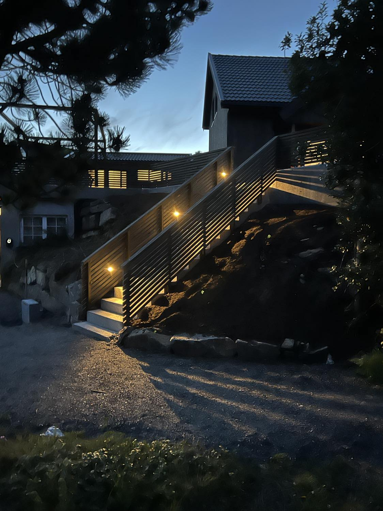
Das Ferienhaus verfügt über 2 Parkplätze auf einem privaten Parkplatz in der Nähe. Parken Sie so nah wie möglich an der Treppe zu Ihrem Ferienhaus.
Eigener Bootsanlegeplatz, Felsen zum Sonnenbaden und Schwimmen, und schöne Außenbereiche in alle Richtungen. Zwei Parkplätze machen es einfach, Besuch zu haben.
Praktische Infos